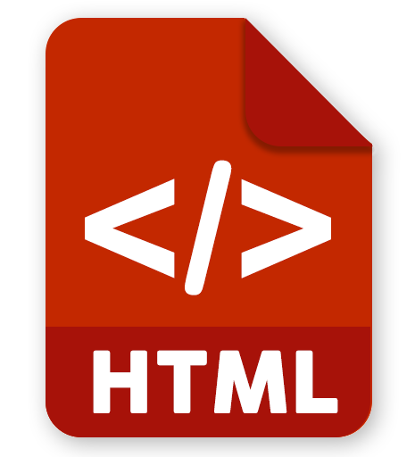

Python
My first language. I like to use Python for its simplicity and
versatility, although it's not always performative. I've used
it for my first projects, such as my
Coffee Machine Simulator.

C++
C++ has helped me to gain an understanding of memory
management and performance-intensive applications, used in my
Class Roster program.

JavaScript
JavaScript has helped me employ creative, dynamic content for
items like collapsable menus/navbars on my front end web
projects.

HTML
HTML serves as the foundational structure of my webpages,
including this portfolio and my part-time
business website.

CSS
CSS enabled the styling used on this portfolio, and also my
business website, which was created with
visual appeal in mind.

SQL
I am currently experimenting with SQL & MySQL to query,
manipulate, and manage data in relational databases.

Visual Studio / Code
Visual Studio has been my go-to IDE for debugging, coding, and
packaging in C++. VSCode is great for use with Python and my
web-dev projects.

Git & GitHub
Learning Git has been fundamental to my version control
software understanding. Combined with GitHub, I
can collaborate and share my projects.
Linux / Command Line
Using Linux and the Command Line, I've become a proficient
Terminal user.
Windows
As the OS of my youth and second dual-boot option, Windows
feels like home to me, even if I code with Linux today.

MacOS
Investing in a Macbook was a great choice to learn the
seamless integration and reliability of apple and MacOS
software.

MS Office
Including Word, Excel, OneNote, and more, office has always
been my documents and productivity software of choice.